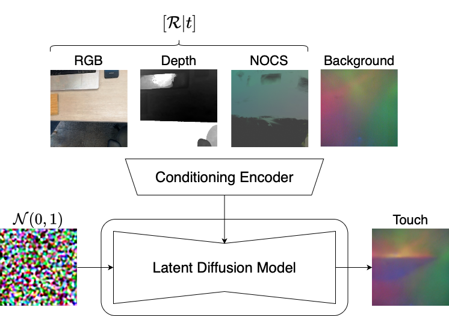
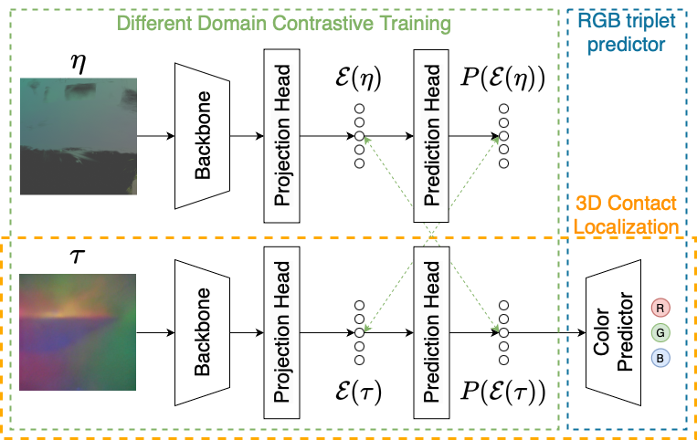

Teaser

Starting from a set of images and sparse touch samples, we generate an implicit NeRF representation alongside a 3D Gaussian Splatting model as an explicit 3D scene representation. The explicit 3D model is then transformed into Normalized Object Coordinate Space (NOCS), enabling the extraction of NOCS maps, where each 3D position is color coded, as scene-level descriptors. This allow to effectively bind the images from the vision domain to the 3D localization of touch samples in the scene, allowing a step forward toward fully touchable 3D scenes.
Abstract
When compared to standard vision-based sensing, touch images generally captures information of a small area of an object, without context, making it difficult to collate them to build a fully touchable 3D scene. Researchers have leveraged generative models to create tactile maps (images) of unseen samples using depth and RGB images extracted from implicit 3D scene representations. Being the depth map referred to a single camera, it provides sufficient information for the generation of a local tactile maps, but it does not encode the global position of the touch sample in the scene.
In this work, we introduce a novel explicit representation for multi-modal 3D scene modeling that integrates both vision and touch. Our approach combines Gaussian Splatting (GS) for 3D scene representation with a diffusion-based generative model to infer missing tactile information from sparse samples, coupled with a contrastive approach for 3D touch localization. Unlike NeRF-based implicit methods, Gaussian Splatting enables the computation of an absolute 3D reference frame via Normalized Object Coordinate Space (NOCS) maps, facilitating structured, 3D-aware tactile generation. This framework not only improves tactile sample prompting but also enhances 3D tactile localization, overcoming the local constraints of prior implicit approaches.
We demonstrate the effectiveness of our method in generating novel touch samples and localizing tactile interactions in 3D. Our results show that explicitly incorporating tactile information into Gaussian Splatting improves multi-modal scene understanding, offering a significant step toward integrating touch into immersive virtual environments.
NOCS scene Representation

Our scene-level NOCS map generation pipeline. We start with the Gaussian Splatting (GS) representation of the scene, which initially contains outliers (left). The scene is refined and normalized within the NOCS framework (center), where each 3D position in space is mapped to an RGB color sample for visualization. The Gaussian Splatting scene is recolored based on the NOCS representation, allowing for the extraction of NOCS maps using the same camera parameters as the vision samples (right).
Haptic Map Generation
3D Contact Localization
Our diffusion model for cross-modal touch generation. The conditioning vector encapsulates the aligned RGB, depth and NOCS maps to obtain the best possible representation of the novel touch sample τ at position [R|t].
Our contrastive networks for 3D contact localization. NOCS and touch are jointly train to obtain representative feature. At test time, given a query touch, the 3D contact localization branch predicts the color that can be mapped to the 3D space thanks to the NOCS map representation.
Results on Haptic Map Generation

Qualitative results on the cross-modal touch generation task. Since the touched sample approximately corresponds to the center of the RGB image, we have highlighted the touched area with a square for better visualization. Our model demonstrates an improved ability to interpret the contextual information provided by the RGB images. For example, in the desk/keyboard sample, the surrounding context appears similar, leading TaRF to generate nearly identical touch samples. In contrast, our method effectively captures the subtle variations in texture and material, resulting in a more diverse and context-aware generation. A similar trend is observed in the edge/table/board images, where our method successfully captures part of the board’s pattern. Notably, the board is a Braille surface used as a calibration object with fine details in the dataset, further demonstrating our model’s improved ability to leverage fine-grained visual details to refine touch predictions.
Results on 3D Contact Localization

Qualitative results on 3D touch estimation task. On the left, the query samples, the relative NOCS and estimated errors. On the right, their actual location in the scene as seen from different viewpoints. The colored cones ∆ represent the ground truth positions and the cubes □ the predicted ones. Our framework consistently estimates the 3D position of query touch samples. The blue and green samples in both scenes are predicted close to their real positions. However, the red sample highlights two areas for potential improvement, primarily due to the noisiness of the Gaussian reconstruction. In the first scene, the position is predicted on the same material surface but at a different location. This is likely caused by Gaussians at the center of the desk being reconstructed further away in the scene and subsequently removed during the noise filtering step—an issue stemming from the challenge of reconstructing featureless surfaces. In the second case, the Gaussian is projected far from the surface but is not filtered out in the noise removal step, resulting in the sample being predicted further away than expected. Addressing these challenges could further refine the accuracy of 3D touch localization.
BibTeX
@article{stefani2025splattouch,
title={SplatTouch: Explicit 3D Representation Binding Vision and Touch},
author={Stefani, Antonio Luigi and Bisagno, Niccol{\'o} and Conci, Nicola and De Natale, Francesco},
booktitle={Proceedings of the IEEE/CVF Conference on Computer Vision and Pattern Recognition (CVPR) Workshops},
month={June},
year={2025}
}
See also our review to understand the context of this work!
@article{stefani2024signal,
title={Signal Processing for Haptic Surface Modeling: a Review},
author={Stefani, Antonio Luigi and Bisagno, Niccol{\`o} and Rosani, Andrea and Conci, Nicola and De Natale, Francesco},
journal={arXiv preprint arXiv:2409.20142},
year={2024}
}
In this work, we present a comprehensive overview of the state-of-the-art in haptic surface modeling, with a particular focus on the signal processing techniques employed in the field. We categorize existing approaches, describe the most important datasets in detail, and provide a thorough overview of the key tasks involved in haptic surface processing.
Look here to get more information.